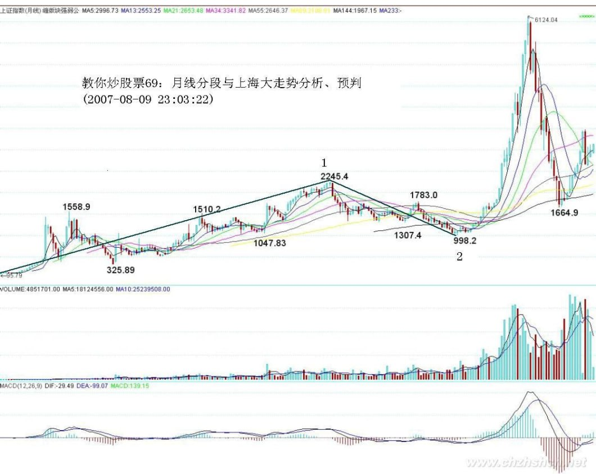
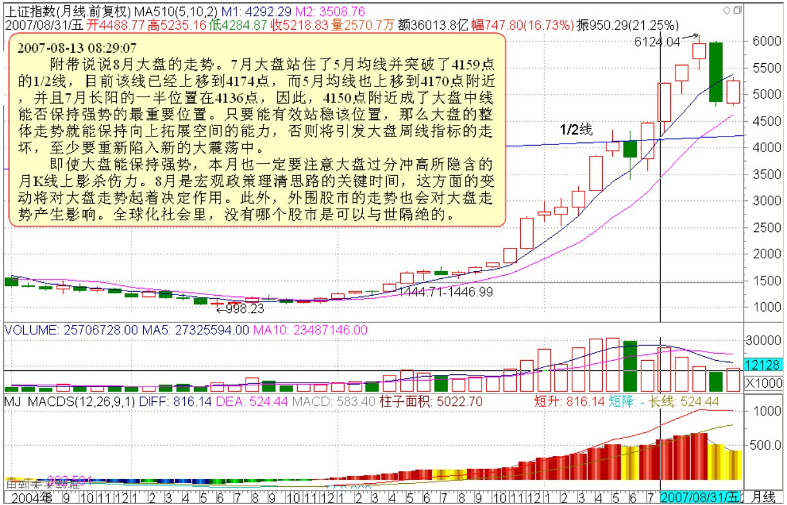
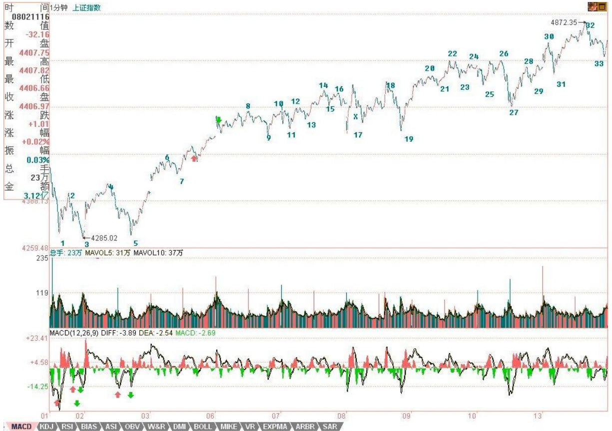
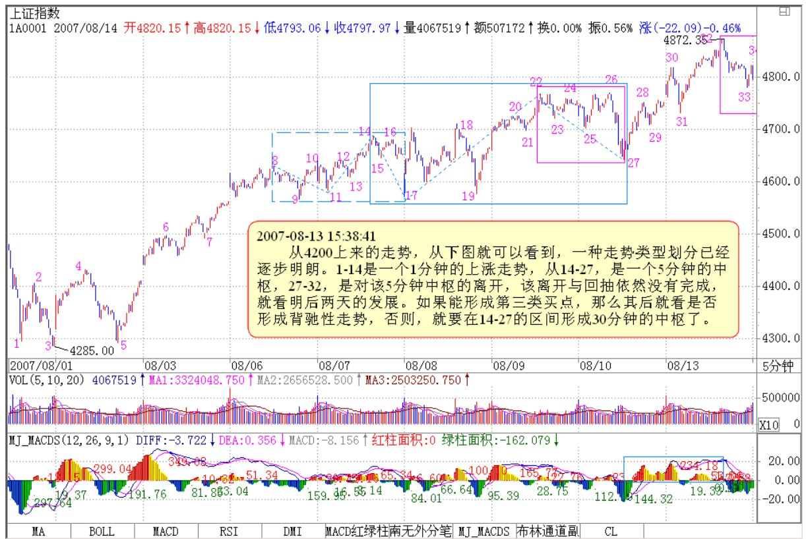
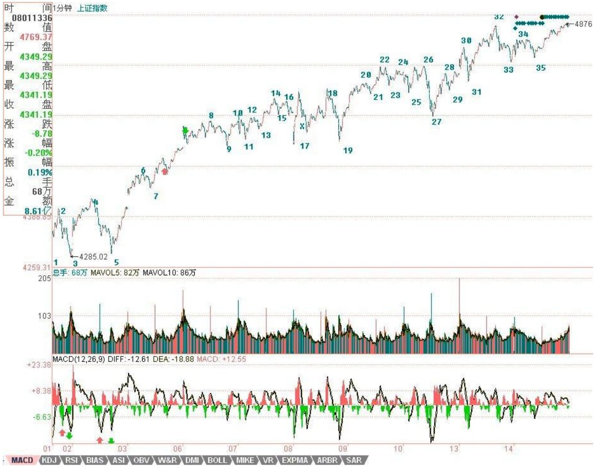
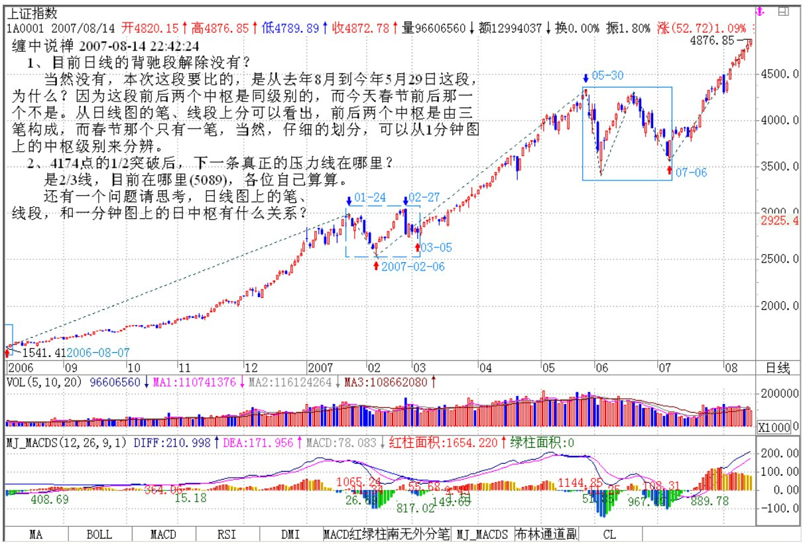
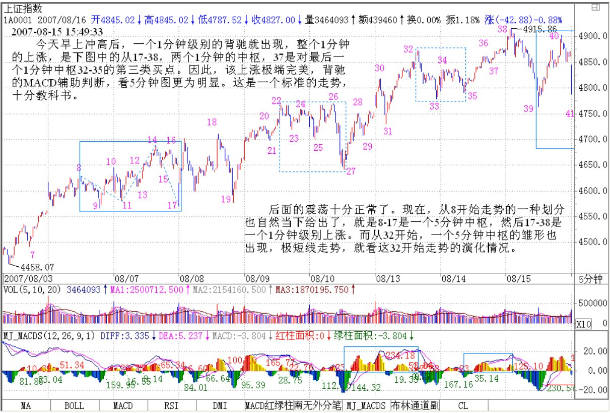

显然，目前月线上的第1、2段已经走出来，其中，按照线段里笔的类背驰，1的结束那顶与2结束那底都是极为容易判断的。上海指数的历史大顶与底，根据这线段的划分，都不是什么难搞的秘密。那么，对现在依然进行中的第3段走势，有什么可百分百确定的呢？
一、显然，这一段要成为段，那至少要三笔，而现在连一笔都没走完，因此，这轮行情的幅度，可想而知。也就是说，即使该笔走完，一个笔的调整后，至少还有一个向上的笔。
二、2245到998点是线段的类中枢，也就是说，只要调整那笔不跌破2245点，那么，将构成一个线段的类第三类买点，这也支持至少要走一笔。
三、 笔的完成，必须要构成一个顶分型。而一个月线的顶分型将如何构成？这意味着什么，这个问题就当成是一个作业，各位去思考一下，然后给出这个结论对应的操作策略。从中也可以亲自实践一下，去明白一下理论指导下操作的力量。
最后，再提一个思考题：为什么本ID在7月份要大搞满江红，而8月以后就放手坐轿子，请利用分型的原理给本ID的行为一个技术上的解释。
*******************************


从4200上来的走势，从上图就可以看到，一种走势类型划分已经逐步明朗。1-14是一个1分钟的上涨走势，从14-27，是一个5分钟的中枢，27-32，是对该5分钟中枢的离开，该离开与回抽依然没有完成，就看明后两天的发展。如果能形成第三类买点，那么其后就看是否形成背驰性走势，否则，就要在14-27的区间形成30分钟的中枢了。


大家现在对今天的32-33为什么不是三段有争论。毕竟符合其中的底分型成立的定义。希望老师能讲讲。另，我对各级别的组合后再寻找区间套特别乱，希望老师能说说。
缠中说禅 2007-08-13 21:56:16
请先搞清楚底分型是从哪里开始算起，哪里开始结束。在这种前面是下跌的，对应的第二是上涨的，其特征序列就是看向下的，这第三个向下的，已经跌破原来第一段的底，怎么能属于第二段里的特征序列？
特征序列的底或顶，首先必须要都属于这个特征序列才行，这是前提条件。其实，如果第二特征序列没有三个元素，就根本不存在出现分段中第二种情况的可能。
今天，14-27这5分钟中枢的第三买点35也总算憋出来了（偶尔看到有问为什么不是九段？九段可延伸成5分钟中枢，可不等于5分钟中枢就一定是九段，这么简单的逻辑关系可别搞糊涂了。）
5分钟第三类买点后，只有两个选择：一、继续上涨直到形成新的5分钟中枢；二、在目前位置附近形成大一级别的30分钟中枢。
现在，关键是热点的蔓延持续，只要这没问题，一切都好办。
站在日线角度，提两个思考题：
1、目前日线的背驰段解除没有？提示，关键是哪段和哪段比，连相比的对象都没分清楚，还谈什么背驰段？更不用说什么精确定位了。
2、4174点的1/2突破后，下一条真正的压力线在哪里？
为什么第三买点不是33？
缠中说禅 2007-08-14 16:01:58
如果是33，前面离开的一分钟走势就是未完成的。而现在，离开是27-32，回抽是32-35，都是标准的1分钟走势类型。
老师,有个问题,就是假如我用5分钟以及更大级别的K 线级别操作的话,画图也还是按照笔--线段--中枢这样的同样的方法吧，另外希望老师能继续股票课程的讲解,别真的离开我们。
缠中说禅 2007-08-14 16:06:43
本 ID 什么时候说要离开了？本 ID 只是说不再新买二级市场的股票，买了窝火。请你先把显微镜和被显微镜这两种关系搞清楚。你当然可以只看5分钟图，那等于用一个不太精确的显微镜，难道5分钟图上就没有线段、笔？用1分钟图上的线段笔，只是一个更精细的显微镜，这并不影响任何级别的操作。关键是对精确度的要求，但笔、线段等等，对任何精确度下的图，都是必要的。本 ID 不是有一课示范了在月线上如何划分笔、线段了吗？
14-27形成5F 中枢是否不准确？因为14开始的3段的高点不够高？
缠中说禅 2007-08-14 16:30:52
中枢和高点高不高有什么关系？中枢，关键是有重合部分。
新浪网友：2007-08-14 16:36:36
我可能没说清楚，因为14开始的3段的高点不够高，使得与后面的六段无法重合？
缠中说禅 2007-08-14 16:40:26
临走回答一下，这问题太典型，就是概念没搞清楚。5分钟中枢，只要3个1分钟走势类型有重合就可以，不是一定要里面的所有段都重合。所有都重合，只是其中一个特殊的情况，这叫又线段延伸九段后形成5分钟中枢，在这种情况下，同样可以看成是三个1分钟走势类型的重合。

缠中说禅 2007-08-14 22:42:24
先给下午那两个问题的答案：
1、目前日线的背驰段解除没有？
当然没有，本次这段要比的，是从去年8月到今年5月29日这段，为什么？因为这段前后两个中枢是同级别的，而今天春节前后那一个不是。从日线图的笔、线段上分可以看出，前后两个中枢是由三笔构成，而春节那个只有一笔，当然，仔细的划分，可以从1分钟图上的中枢级别来分辨。
2、4174点的1/2突破后，下一条真正的压力线在哪里？
是2/3线，目前在哪里，各位自己算算。(5089=1429+183(月)×30×2/3)还有一个问题请思考，日线图上的笔、线段，和一分钟图上的日中枢有什么关系？

因此，该上涨极端完美，背驰的 MACD 辅助判断，看5分钟图更为明显。（各位请自己去看，在5分钟图中，看对应1分钟图中的走势去比较力度。)